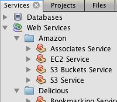
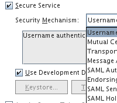
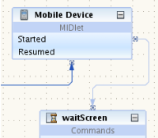

NetBeans IDEは、Java EE 7、Java EE 6およびJava EE 5のWebサービス標準(JAX-WS 2.2、JAX-RS 2.0、JAXB 2.2 Webサービス標準を含む)をサポートしています。GlassFish Server Open Source Edition、Oracle Weblogic、Apache Tomcat、JBoss、その他多くのサーバーを使用できます。このエディタのコード補完機能には、Webサービスで使用できる注釈も含まれます。
IDEは、JPAのエンティティ・クラスとパターンからの、またはデータベースから直接の(JAX-RS 2.0) RESTful Webサービスの作成を支援します。RESTful WebサービスでエンティティBeansをラップし、CRUD機能を簡単に実現できます。
Java EE 7およびJava EE 6 RESTful Webサービスの場合は、エンティティ・クラスのJAXB注釈およびサービス・クラスのEJBセッション・ファサードが使用されます。これにより、コンバータ・クラスが不要になり、より単純なコードが生成されます。
Java EE 5 RESTful Webサービスには、ファサードを使用することもできます。IDEでは、コンバータ・クラスを生成するかわりに、JPA Persistence APIコントローラ・クラスを使用してEE5 RESTfulサービスを生成できます。
RESTful Webサービスについて
Webサービス・ウィザードおよびWebサービス・ビジュアル・デザイナを使用して、JavaクラスまたはWSDLファイルからWebサービスを作成および開発できます。
IDEには、Webサービス注釈を操作するツール(Web Services Metadata for Java)が用意されています。Javaクラスには@javax.jwsという注釈が付きます。Webサービスの注釈は、プロジェクト内のWebサービスで自動的に認識されます。IDEでは、ビジュアル・デザイナまたはWebサービス・カスタマイズ・エディタなどの様々な機能で、JAX-WS 2.2ランタイムがサポートされています。NetBeans IDE 7.2では、ビジュアル・デザイナのサポートはMavenプロジェクトまで拡張されています。
Webサービス・ノードで使用できるアクションを使用することで、SOAPベースのWebサービスをRESTfulサービス・リソースに変換できます。非同期Webサービス・クライアントの作成には、Webサービス・カスタマイズ・エディタを使用します。
JAX-WS Webサービスについて
またIDEでは、Webサービスにアクセスするクライアント・アプリケーションのテストおよびビルドもサポートしています。WADLからのJavaScriptクライアント・スタブなど、Webサービス(RESTfulおよびSOAPベースの両方)を呼び出すためのコードを生成できます。また、NetBeans IDEに登録されているサービス用のJava WebおよびJavaアプリケーションでRESTful Javaクライアントを生成することもできます。NetBeans IDEには、FlickrやTwitterなど、幅広く利用されているいくつかのサービスがあらかじめ登録されています。
「サービス」タブを使用して、サーバー側マッシュアップ・アプリケーションを簡単に作成し、それらのWebサービス・デスクリプタ・ファイル(WSDLまたはWADL)からサービスを追加できます。サービス操作を、POJO、サーブレット、JSP、JSF、またはPHPページにドラッグ・アンド・ドロップすると、IDEがアクセス・コードを生成します。
JAX-WS Webサービス・クライアントの開発
Webサービスへのアクセス |
WSITのサポート |
モバイルWebサービス |
|
 |
 |
 |
{kind=link}
{kind=link}
{kind=link}
{kind=link}